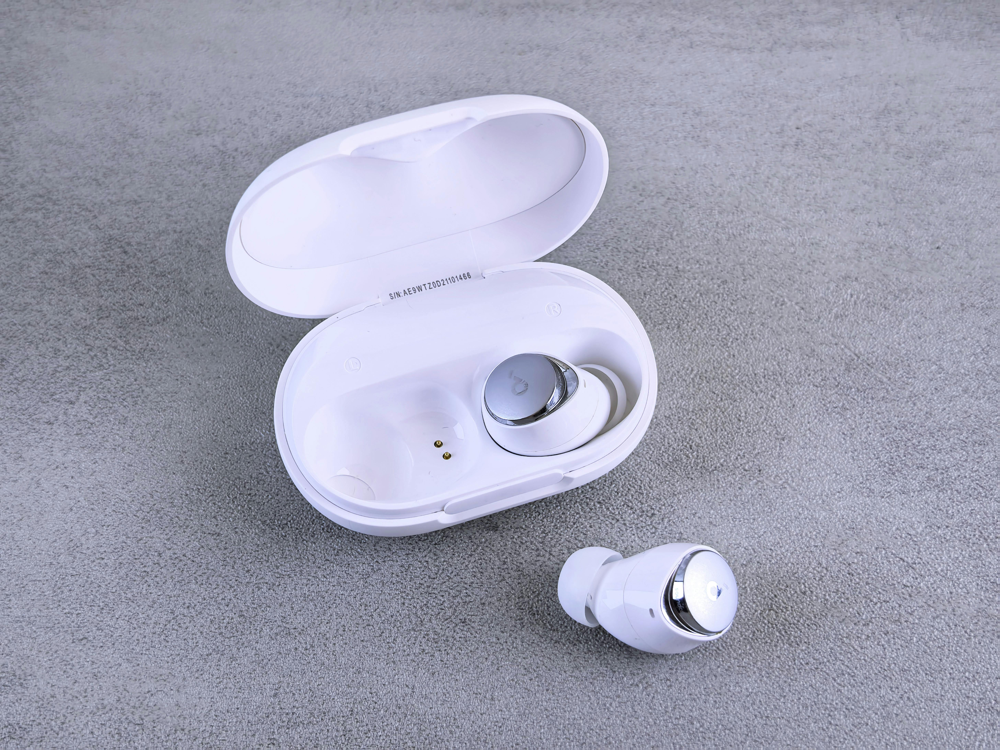
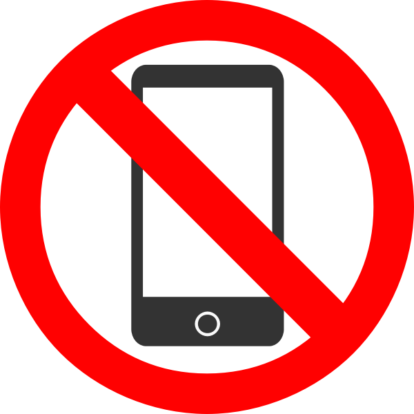
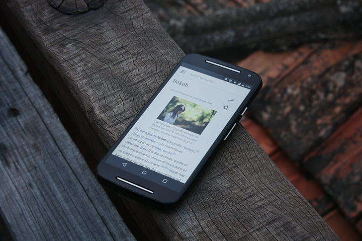

The House System
In 2023, consultation with students, staff and whānau was undertaken to gather information and opinion related to the school current policy around access to mobile phones. The outcomes of this consultation process have contributed to the writing of new school procedures around student access to mobile phones while at school. This coincides with the new government’s “Phones Away for the Day” policy released in January 2024, which provides clear guidelines around mobile phone use in schools.
International research indicates some key challenges with mobile phones at school such as being a major distraction for our students. These rules are designed to ensure that the learning of all students is maximised, while minimising any potential for distraction and cyber-bullying. Our approach to ‘phones away for the day’ involves students leaving their phones in their bags and switching off during school hours 8.30am - 3.15pm, or while students are onsite. This includes students who are visiting onsite.

It is important to note that if students do make the decision to bring a mobile phone to the school grounds, they do so at their own risk. The school is not responsible for any loss or damage caused to any mobile phone. We understand that some parents like their children to have a phone to communicate with them during the day. Students will be able to catch up with this communication once they leave school grounds. If a parent / caregiver needs to make contact with their child for an emergency, or for other practical reasons, they can communicate directly with our school office at 04 9399370.
Mobile phones ‘away for the day’ expectation procedures from 2024:
- Students are NOT permitted to access their mobile phones while onsite at Heretaunga College before school, during class time, during class transitions, and during break times. Phones are not to be used or seen during the hours of 8.30am and 3.15pm.
- Students are NOT permitted access to mobile phones in classrooms / teaching spaces, during lessons (including PRIDE mentoring time).
- During lesson time, and in break times, mobile phones will remain in student bags and be turned off. All students are encouraged to bring their own chromebook or laptop device to use as their classroom learning tool.
- Students will NOT be reminded to put their mobile phones in their bags. The school’s expectation is that all mobile phones will be ‘away’ in bags during school hours.
- Students are NOT permitted to wear electronic ear buds, Airpods or similar sound/listening accessories during school hours. Exemptions for medical reasons will be approved by application to the Principal.
- Smart watches are considered extensions of smartphones and are not permitted to be worn during classes.
- If a student fails to put their mobile phone in their bag, they will be asked to hand their phone to the teacher. The teacher will keep the phone for the lesson and return at the end of the lesson. On the second incident the teacher will notify the Principal. The Principal will meet with the student.
- If a student refuses to hand their phone to their teacher, then the Principal will be called to class to retrieve the phone. The phone will not be returned to the student, and a parent will be required to come to school to retrieve the phone from the Principal.
- For continual refusal to follow the mobile phone procedures, a student may be required to meet with the Principal and whānau/caregivers to discuss and implement a mobile phone plan (this may include handing in their mobile phone to the office at the beginning of each day, or leaving their mobile phone at home).
- If teachers require students to use their phones for a specific learning or assessment purpose, they will need to apply to the Principal one week prior to this lesson. This will only be approved where alternative devices are not appropriate. Students will be notified in advance. Mobile phones will only be used for the learning purpose only.
- Caregivers can make contact with the school office if they require messages to be given to ākonga during school hours.
- Accidental damage to confiscated phones will NOT be the responsibility of the school.

Exemptions:
In matters related to a student's immediate health and safety concerns, a parent or caregiver can apply at any time to the Principal for a period of exemption (e.g., medical conditions or protection issues). Individual learning plans for identified students may require the use of a mobile phone (e.g international student translation). These learning plans will be developed where specific needs are identified. For any other (and longer term) health and safety related matters, a specific mobile phone access provision may be prepared as part of an individual student’s wellbeing plan.

Education outside the classroom (EOTC):
Students may be required to bring certain digital devices on EOTC activities but should check whether their device is allowed before the activity commences. Usage will be at the discretion of teachers and other adult supervisors. Please note with all exemptions and exceptions appropriate usage guidelines and other relevant school rules still apply.